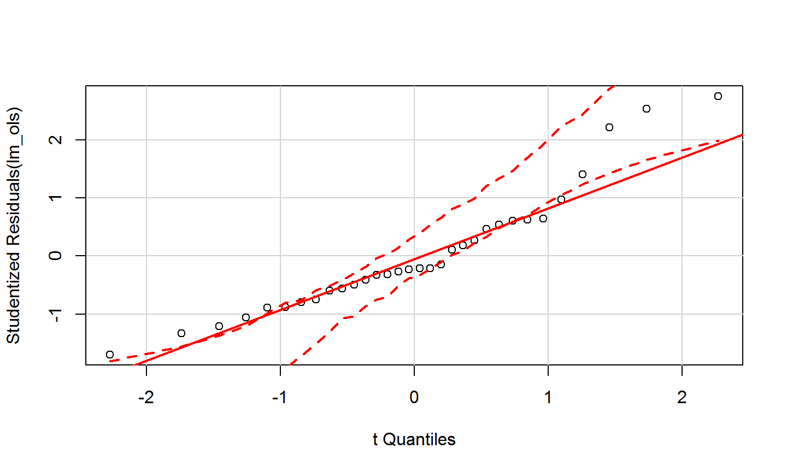
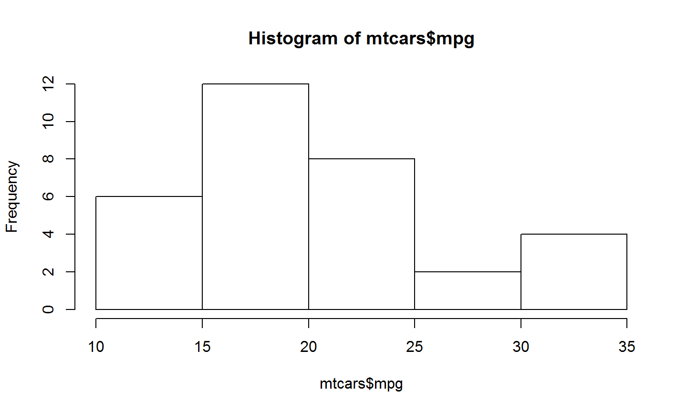
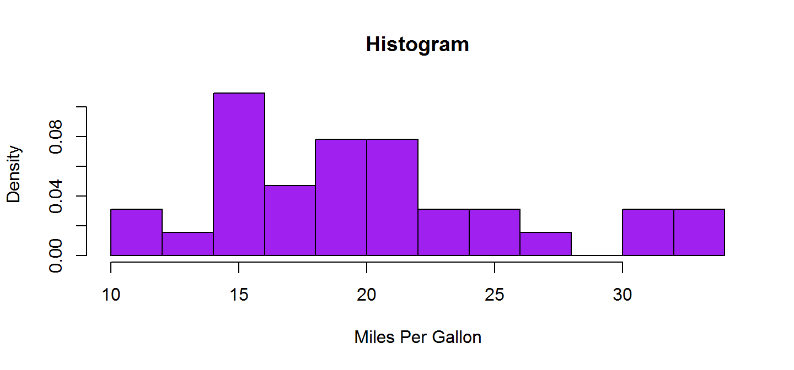
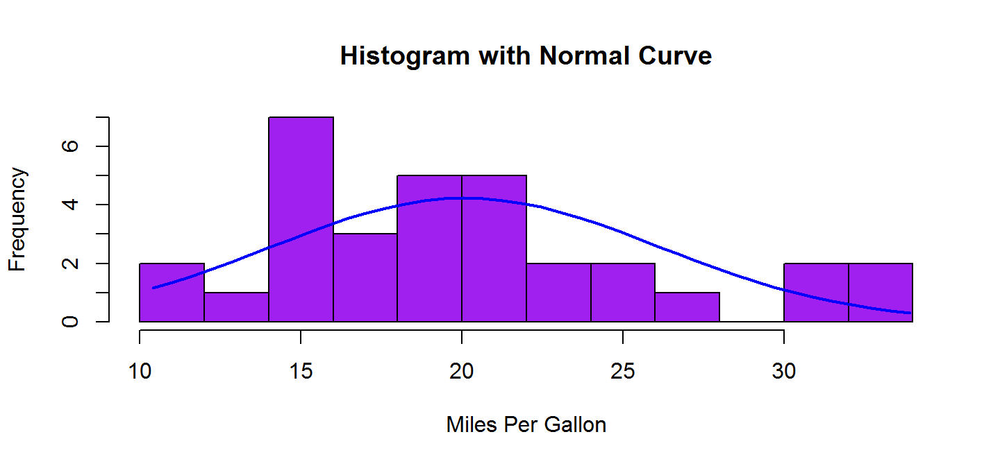
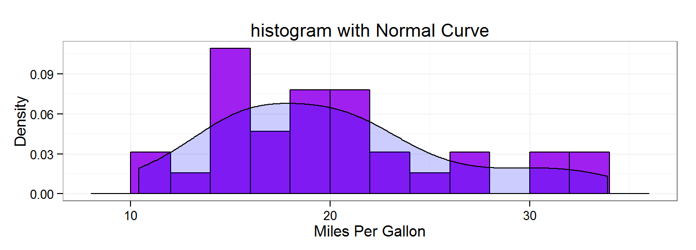
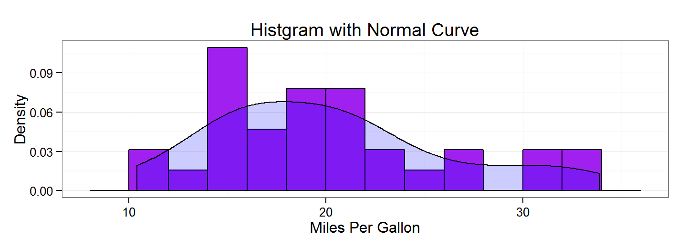
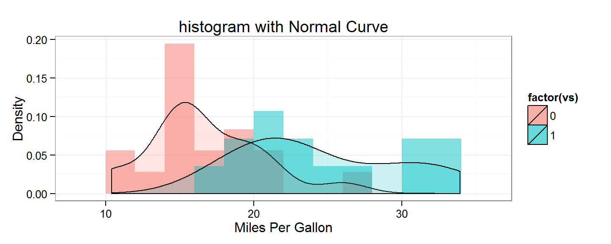

Preface
What are covered
- A overview of R
- Data manipulation (input/output, row/column selections, etc.)
- Descriptive and binary hypotheses (summary, correlation, t-test, etc.)
- Multiple regression (OLS, GLS, MLM, etc.)
- Presentation (table, graph)
- Version control (if we have time)
An Overview of R
What's R?
R is a programming language
R is developed and maintained by statisticians.
- R is a
weird programming language
- Weird for users of typical statistical software (such as STATA)
- object-oriented programming (OOP).
- Weird for programmers: inconsistent and strict coding
- The debate of assignment operator (
=vs.<-) library("interplot")==library(interplot)
- The debate of assignment operator (
- Weird for users of typical statistical software (such as STATA)
So, why do we still learn that, given its weirdness?
Why do you want to use R?
- It's free!!
- It's developing!
- R is very compatible with new techniques
- e.g., Network analysis, spatial analysis with GIS, and text analysis with big data.
- It's multi-lingual!
"Hello 你好 안녕하세요 здравствуйте"
- It's popular!
What can you do with R?
- Do statistics as STATA, SAS, SPSS, EXCEL,…
- Scrape data from websites as Python, Java,…
- Create presentation slides, documents, webpages as MS Word, Powerpoint, TexMaker, Dreamweaver,…
- Solve math problems as Matlab, Mathematica, …
An observation in the "useR" conference (2015):
" I saw how R and Hadoop is used to make the Tribal Wars game engaging for 150M players; R is used to teach high schoolers to code, as their first programming language; R is used to help veterinarians identify lameness in horses using 3-d accelerometers …"
When you don't have much time to learn it,

Source: NYU Data Services.
Software and package installations
Software installation


Package installation and loading
Packages are " Apps" for your R system. You can use R without them, but if you want fun, install them ~
install.packages(<package name>) install_github("<repositary/package name>")
Click the apps: Load the package
library(<package name>) require(<package name>)
RStudio

Wrap Up
R is a programming language that can do a lot of statistical and non-statistical things.
Install R, RStudio (optional), and packages (optional)
- Next: Let's Start the Journey

Do Statistics with R
Set where to locate the data and store the results
- Always check or set the
working directory first
getwd()setwd("E:/R workshop/rworkshop")
- Or click, click, click, and click in Rstudio

Vector
( Tip)
1:10 # numeric (integer/double)
## [1] 1 2 3 4 5 6 7 8 9 10
c("R", "workshop") # character
## [1] "R" "workshop"
3 == 5 # logical
## [1] FALSE
factor(1:3, levels = 1:3, labels = c("low", "medium", "high")) # factor
## [1] low medium high ## Levels: low medium high
Dataset
matrix(1:4, ncol = 2) # matrix
## [,1] [,2] ## [1,] 1 3 ## [2,] 2 4
data.frame(x = 1:2, y = 3:4) # data.frame
## x y ## 1 1 3 ## 2 2 4
list(c("one", "two"), c(3, 4)) # 2-D list
## [[1]] ## [1] "one" "two" ## ## [[2]] ## [1] 3 4
array(c(1:4,5:8), dim = c(2, 2, 3)) # 3-D or n-D "list""
## , , 1 ## ## [,1] [,2] ## [1,] 1 3 ## [2,] 2 4 ## ## , , 2 ## ## [,1] [,2] ## [1,] 5 7 ## [2,] 6 8 ## ## , , 3 ## ## [,1] [,2] ## [1,] 1 3 ## [2,] 2 4
Save data to an object
x <- rep(c(.01, .05, .1), times = 2) # repeat 1:5 for twice df <- data.frame(x = 1:1, y = 3:4) list <- list(x, df) list # == print(list)
## [[1]] ## [1] 0.01 0.05 0.10 0.01 0.05 0.10 ## ## [[2]] ## x y ## 1 1 3 ## 2 1 4
Basic rules for object name:
- Start with numbers (WRONG:
1stday) - No special signs except for
.and-(WRONG:M&M) - Case sensitivity (
X != x)
Attributes of an object
- Structure
str(df)
## 'data.frame': 2 obs. of 2 variables: ## $ x: int 1 1 ## $ y: int 3 4
- Unique values ( Tip)
unique(df$x)
## [1] 1
- Names
names(df)
## [1] "x" "y"
Length
length(x)
## [1] 6
Class
class(x);typeof(x) # ; is used to write two commands in one line
## [1] "numeric"
## [1] "double"
Detect the attributes
Using is.
is.numeric(x)
## [1] TRUE
is.na(x) # detect if x includes missing values
## [1] FALSE FALSE FALSE FALSE FALSE FALSE
Do math in R
# basic math x + (1 - 2) * 3 / 4 # advanced math x^2;sqrt(x);log(x);exp(x) # matrix algebra z <- matrix(1:4, ncol = 2) z + z - z z %*% z # inner mul<span style="color:green">Tip</span>lication z %o% z # outter mul<span style="color:green">Tip</span>lication # logical evaluation x == z; x != Z x & z; x | z x > z; x <= z
Wrap up
- Set the working directory first:
setwd() - Four types of data: numeric, character, logical, factor
- Four types of datasets: matrix, data.frame, list, array
- Save the things into an object by
<-, e.g.,list <- list(x, df)- Objects have attributes (
str(),length(),names(), etc.) - Detect the attributes with
is., e.g.,is.numeric(x)
- Objects have attributes (
- Do math in R
Next: let's have a look at the data, first.
Data Analysis
Input data
- R can read almost all types of datasets.
load("<FileName>.RData")
df_txt <- read.table("<FileName>.txt")
df_csv <- read.csv("<FileName>.csv")
- Some data are already embedded in R. To call them, use
data(), e.g.
data(mtcars)
Input data with packages
# Excel sheets
library(readxl)
df_excel <- read_excel("<FileName>.xls");read_excel("<FileName>.xlsx")
# SPSS/STATA/SAS
library(foreign)
df_spss <- read.spss("<FileName>.sav")
df_stata <- read.dta("<FileName>.dta")
df_sas <- read.sas7bdat("<FileName>.sas7bdat")
# JavaScript Object Notation
library(rjson)
df_json <- fromJSON(file = "<FileName>.json" )
# XML/Html
df_xml <- xmlTreeParse("<url>")
df_html <- readHTMLTable(url, which=3)
More instructions are available in this blog.
Output data
- Save in a R dataset (
.RData) Tip
save(object, file = "./Data/mydata.Rdata")
- Save as
.csv
write.csv(object, file = "mydata.csv")
Manipulate the data
- let's call a dataset first,
data(mtcars)
- How many variables and what are they?
ncol(mtcars);names(mtcars)
## [1] 11
## [1] "mpg" "cyl" "disp" "hp" "drat" "wt" "qsec" "vs" "am" "gear" ## [11] "carb"
Have a look at the data
head(mtcars) # show the first six lines of mtcars
## mpg cyl disp hp drat wt qsec vs am gear carb ## Mazda RX4 21.0 6 160 110 3.90 2.620 16.46 0 1 4 4 ## Mazda RX4 Wag 21.0 6 160 110 3.90 2.875 17.02 0 1 4 4 ## Datsun 710 22.8 4 108 93 3.85 2.320 18.61 1 1 4 1 ## Hornet 4 Drive 21.4 6 258 110 3.08 3.215 19.44 1 0 3 1 ## Hornet Sportabout 18.7 8 360 175 3.15 3.440 17.02 0 0 3 2 ## Valiant 18.1 6 225 105 2.76 3.460 20.22 1 0 3 1
Look at a specific area in a dataset
In a dataset or matrix, a special row and column can be specified by data[col#,row#] or data["colName","rowName"].
So, for example, to select the first two rows of the third and fourth columns:
mtcars[1:2,3:4] # show first and the second rows of the third and fourth columns
## disp hp ## Mazda RX4 160 110 ## Mazda RX4 Wag 160 110
Row/column selection
- Select an entire row or column ( Tip: The comma!)
mtcars[,"mpg"] # show the column "mpg"
- Select components of a selected row or column
mtcars[,"mpg"][3] # show the third component of the column "mpg"
## [1] 22.8
Select with special conditions
mtcars[mtcars$mpg < 20,][1,] # show the first rows which mpg are below 5.
## mpg cyl disp hp drat wt qsec vs am gear carb ## Hornet Sportabout 18.7 8 360 175 3.15 3.44 17.02 0 0 3 2
Create new rows/columns
mtcars$id <- seq(1:nrow(mtcars)) names(mtcars)
## [1] "mpg" "cyl" "disp" "hp" "drat" "wt" "qsec" "vs" "am" "gear" ## [11] "carb" "id"
Descriptive analysis
For a dataset or a numeric vector
summary(mtcars)
## mpg cyl disp hp ## Min. :10.40 Min. :4.000 Min. : 71.1 Min. : 52.0 ## 1st Qu.:15.43 1st Qu.:4.000 1st Qu.:120.8 1st Qu.: 96.5 ## Median :19.20 Median :6.000 Median :196.3 Median :123.0 ## Mean :20.09 Mean :6.188 Mean :230.7 Mean :146.7 ## 3rd Qu.:22.80 3rd Qu.:8.000 3rd Qu.:326.0 3rd Qu.:180.0 ## Max. :33.90 Max. :8.000 Max. :472.0 Max. :335.0 ## drat wt qsec vs ## Min. :2.760 Min. :1.513 Min. :14.50 Min. :0.0000 ## 1st Qu.:3.080 1st Qu.:2.581 1st Qu.:16.89 1st Qu.:0.0000 ## Median :3.695 Median :3.325 Median :17.71 Median :0.0000 ## Mean :3.597 Mean :3.217 Mean :17.85 Mean :0.4375 ## 3rd Qu.:3.920 3rd Qu.:3.610 3rd Qu.:18.90 3rd Qu.:1.0000 ## Max. :4.930 Max. :5.424 Max. :22.90 Max. :1.0000 ## am gear carb id ## Min. :0.0000 Min. :3.000 Min. :1.000 Min. : 1.00 ## 1st Qu.:0.0000 1st Qu.:3.000 1st Qu.:2.000 1st Qu.: 8.75 ## Median :0.0000 Median :4.000 Median :2.000 Median :16.50 ## Mean :0.4062 Mean :3.688 Mean :2.812 Mean :16.50 ## 3rd Qu.:1.0000 3rd Qu.:4.000 3rd Qu.:4.000 3rd Qu.:24.25 ## Max. :1.0000 Max. :5.000 Max. :8.000 Max. :32.00
One can use mean, sd, max, min, etc. to extract specific descriptive statistics.
Descriptive analysis (continue)
- For categorical vectors
table(mtcars$cyl)
## ## 4 6 8 ## 11 7 14
- For observation number and variable number
nrow(mtcars) # observation (N)
## [1] 32
ncol(mtcars) # variable number
## [1] 12
Data manipulation
- Create a variable into the dataset ( Tip)
mtcars$newvar <- rbinom(32, 1, .5) #create a random binomial variable mtcars$newvar <- c(1:nrow(mtcars)) # create an "ID" variable
- Remove a variable from the dataset
mtcars$newvar <- NULL
- Remove variable, result, function, or data from the environment
rm(x)
Recode a variable: e.g., numeric to binary, mpg > mean, 1, otherwise 0
# Method I
mtcars$newvar[mtcars$mpg > mean(mtcars$mpg)] <- 1
mtcars$newvar[mtcars$mpg <= mean(mtcars$mpg)] <- 0
# Method II
mtcars$newvar <- ifelse(mtcars$mpg > mean(mtcars$mpg), 1, 0) # overwrite the NAs
mtcars$newvar <- ifelse(is.na(mtcars$mpg), NA,
ifelse(mtcars$mpg > mean(mtcars$mpg), 1, 0))
Label: Only nominal variables can have labels
mtcars$newvar <- factor(mtcars$gear, levels = 3:5, labels = c("3-gear", "4-gear", "5-gear"))
table(mtcars$newvar)
## ## 3-gear 4-gear 5-gear ## 15 12 5
Wrap Up
- Input/output:
load()/read.series andsave()/write.series - A glimpse of data:
head()ordata.frame[col#, row#] - Description:
summary(),table(),ncol(),nrow(),- More specific:
mean,sd,max,min, etc.
- More specific:
- Manipulation:
- create:
mtcars$newvar <- c(1:nrow(mtcars)) - Remove:
mtcars$newvar <- NULL;rm() - Recode:
recodevar[<condition>] <- <new value> - label: using the
labelargument offactor.
- create:
- There are also
applyfamily functions for with batching management of data.
Next: the core task comes—hypothesis testing!

Hypothesis Tests
Binary Tests: Difference of mean
\(H_{0}: \bar{cylinders} = \bar{gears},\ \alpha = .05\)
t.test(mtcars$cyl, mtcars$gears)
## ## One Sample t-test ## ## data: mtcars$cyl ## t = 19.599, df = 31, p-value < 2.2e-16 ## alternative hypothesis: true mean is not equal to 0 ## 95 percent confidence interval: ## 5.543607 6.831393 ## sample estimates: ## mean of x ## 6.1875
t.test offers arguments alternative, mu, paired, and conf.level for users to change in two-tail/one-tail test, parameter mean, independent/paired comparison, and \(\alpha\).
# one side, cyl > gear, alpha = .01
t.test(mtcars$cyl, mtcars$gear,
alternative = "greater", conf.level = .99)
)
# comparing with the parameter (true value)
t.test(mtcars$cyl, mu = 6) # the true mean is 6.
Binary Tests: Correlation
\(H_{0}: \rho_{(cyl,gear)} = 0,\ \alpha = .05\)
cor.test(mtcars$cyl, mtcars$gear)
## ## Pearson's product-moment correlation ## ## data: mtcars$cyl and mtcars$gear ## t = -3.1011, df = 30, p-value = 0.004173 ## alternative hypothesis: true correlation is not equal to 0 ## 95 percent confidence interval: ## -0.7180260 -0.1738615 ## sample estimates: ## cor ## -0.4926866
cor.test offers various arguments as in t.test for more specific settings. Moreover, users can use the method argument to set the method to calculate the correlations, "Pearson", "Kendall", or "Spearman." (
Tip)
cor.test(mtcars$cyl, mtcars$gear, method = "kendall")
## Warning in cor.test.default(mtcars$cyl, mtcars$gear, method = "kendall"): ## Cannot compute exact p-value with ties
## ## Kendall's rank correlation tau ## ## data: mtcars$cyl and mtcars$gear ## z = -3.1551, p-value = 0.001604 ## alternative hypothesis: true tau is not equal to 0 ## sample estimates: ## tau ## -0.5125435
We can get the correlation matrix, too:
cor(mtcars[,1:4])
## mpg cyl disp hp ## mpg 1.0000000 -0.8521620 -0.8475514 -0.7761684 ## cyl -0.8521620 1.0000000 0.9020329 0.8324475 ## disp -0.8475514 0.9020329 1.0000000 0.7909486 ## hp -0.7761684 0.8324475 0.7909486 1.0000000
Binary Tests: ANOVA
One way or two way ANOVA: ( Tip)
aov_one <- aov(cyl ~ gear, data = mtcars) #one-way aov_two <- aov(cyl ~ gear + am, data = mtcars) #two-way summary(aov_one); summary(aov_two)
## Df Sum Sq Mean Sq F value Pr(>F) ## gear 1 24.00 24.001 9.617 0.00417 ** ## Residuals 30 74.87 2.496 ## --- ## Signif. codes: 0 '***' 0.001 '**' 0.01 '*' 0.05 '.' 0.1 ' ' 1
## Df Sum Sq Mean Sq F value Pr(>F) ## gear 1 24.00 24.001 9.907 0.00379 ** ## am 1 4.62 4.620 1.907 0.17786 ## Residuals 29 70.25 2.423 ## --- ## Signif. codes: 0 '***' 0.001 '**' 0.01 '*' 0.05 '.' 0.1 ' ' 1
Wrap up
T-test:
t.test(x, y = NULL, alternative = c("two.sided", "less", "greater"), mu = 0, paired = FALSE, conf.level = 0.95, ...)Correlation:
cor.test(x, y, alternative = c("two.sided", "less", "greater"), method = c("pearson", "kendall", "spearman"), conf.level = 0.95, continuity = FALSE, ...)ANOVA:
aov(formula, data = NULL, ...)
Next: more commands are coming: multiple regressions~

Multiple Regression
Ordinary Linear Regression
- we are detecting the contributions of the cylinders, horsepower, and weight of the care (Xs) to the mileage (Y):
lm_ols <- lm(mpg ~ cyl + hp + wt, data = mtcars)
The result
summary(lm_ols)
## ## Call: ## lm(formula = mpg ~ cyl + hp + wt, data = mtcars) ## ## Residuals: ## Min 1Q Median 3Q Max ## -3.9290 -1.5598 -0.5311 1.1850 5.8986 ## ## Coefficients: ## Estimate Std. Error t value Pr(>|t|) ## (Intercept) 38.75179 1.78686 21.687 < 2e-16 *** ## cyl -0.94162 0.55092 -1.709 0.098480 . ## hp -0.01804 0.01188 -1.519 0.140015 ## wt -3.16697 0.74058 -4.276 0.000199 *** ## --- ## Signif. codes: 0 '***' 0.001 '**' 0.01 '*' 0.05 '.' 0.1 ' ' 1 ## ## Residual standard error: 2.512 on 28 degrees of freedom ## Multiple R-squared: 0.8431, Adjusted R-squared: 0.8263 ## F-statistic: 50.17 on 3 and 28 DF, p-value: 2.184e-11
Nonlinear transition
ln, square, exponential, or inverse
lm_tran <- lm(log(mpg) ~ I(cyl^2) + exp(hp) + I(1/wt), data = mtcars)
Of course, if you want, you can create special variables that equal log(mpg), cyl^2, or exp(hp), and use them to do the regression.
The result
summary(lm_tran)
## ## Call: ## lm(formula = log(mpg) ~ I(cyl^2) + exp(hp) + I(1/wt), data = mtcars) ## ## Residuals: ## Min 1Q Median 3Q Max ## -0.27532 -0.06730 -0.01030 0.08334 0.24674 ## ## Coefficients: ## Estimate Std. Error t value Pr(>|t|) ## (Intercept) 2.770e+00 1.633e-01 16.958 2.92e-16 *** ## I(cyl^2) -6.282e-03 1.664e-03 -3.775 0.000765 *** ## exp(hp) -8.547e-148 4.283e-147 -0.200 0.843268 ## I(1/wt) 1.308e+00 3.022e-01 4.329 0.000173 *** ## --- ## Signif. codes: 0 '***' 0.001 '**' 0.01 '*' 0.05 '.' 0.1 ' ' 1 ## ## Residual standard error: 0.1271 on 28 degrees of freedom ## Multiple R-squared: 0.8354, Adjusted R-squared: 0.8178 ## F-statistic: 47.38 on 3 and 28 DF, p-value: 4.26e-11
Break the factor variable
If we want to include a categorical variable into the regression, R will break it into binary variables for you.
mtcars$gear_f <- factor(mtcars$gear, levels = 3:5, labels = c("3-gear", "4-gear", "5-gear"))
lm_f <- lm(mpg ~ cyl + hp + wt + gear_f, data = mtcars)
The result
summary(lm_f)
## ## Call: ## lm(formula = mpg ~ cyl + hp + wt + gear_f, data = mtcars) ## ## Residuals: ## Min 1Q Median 3Q Max ## -3.4107 -1.7394 -0.6204 1.2435 5.9357 ## ## Coefficients: ## Estimate Std. Error t value Pr(>|t|) ## (Intercept) 37.67538 3.49111 10.792 4.24e-11 *** ## cyl -0.80485 0.68114 -1.182 0.24805 ## hp -0.02116 0.01712 -1.236 0.22757 ## wt -3.03971 0.88754 -3.425 0.00205 ** ## gear_f4-gear 0.46155 1.49468 0.309 0.75994 ## gear_f5-gear 0.67475 2.11262 0.319 0.75198 ## --- ## Signif. codes: 0 '***' 0.001 '**' 0.01 '*' 0.05 '.' 0.1 ' ' 1 ## ## Residual standard error: 2.6 on 26 degrees of freedom ## Multiple R-squared: 0.844, Adjusted R-squared: 0.814 ## F-statistic: 28.12 on 5 and 26 DF, p-value: 1.04e-09
Interaction
Two ways to write the model
lm_in <- lm(mpg ~ cyl + hp * wt, data = mtcars) lm_in2 <- lm(mpg ~ cyl + hp + wt + hp:wt, data = mtcars)
The result
summary(lm_in)
## ## Call: ## lm(formula = mpg ~ cyl + hp * wt, data = mtcars) ## ## Residuals: ## Min 1Q Median 3Q Max ## -3.3917 -1.6444 -0.6117 1.4213 4.5530 ## ## Coefficients: ## Estimate Std. Error t value Pr(>|t|) ## (Intercept) 49.490987 3.663514 13.509 1.58e-13 *** ## cyl -0.365239 0.508620 -0.718 0.47887 ## hp -0.108394 0.029775 -3.640 0.00114 ** ## wt -7.627489 1.521056 -5.015 2.93e-05 *** ## hp:wt 0.025837 0.007992 3.233 0.00322 ** ## --- ## Signif. codes: 0 '***' 0.001 '**' 0.01 '*' 0.05 '.' 0.1 ' ' 1 ## ## Residual standard error: 2.172 on 27 degrees of freedom ## Multiple R-squared: 0.8869, Adjusted R-squared: 0.8702 ## F-statistic: 52.94 on 4 and 27 DF, p-value: 2.156e-12
Post-estimate diagnoses: Residural
res_long <- mtcars$mpg - predict(lm_ols) res_short <- resid(lm_ols) plot(lm_ols, which = 1) # residural vs. fitted plot

Post-estimate diagnoses: Outliers
library(car) # Bonferonni p-value for most extreme obs outlierTest(lm_ols)
## ## No Studentized residuals with Bonferonni p < 0.05 ## Largest |rstudent|: ## rstudent unadjusted p-value Bonferonni p ## Toyota Corolla 2.749837 0.010508 0.33625
qqPlot(lm_ols) #qq plot for studentized resid

Post-estimate diagnoses: CLRM Properties
- Heteroscedasticity
ncvTest(lm_ols)
## Non-constant Variance Score Test ## Variance formula: ~ fitted.values ## Chisquare = 2.882097 Df = 1 p = 0.08956928
- Multicollinearity
vif(lm_ols)
## cyl hp wt ## 4.757456 3.258481 2.580486
Autocoorelation
durbinWatsonTest(lm_ols)
## lag Autocorrelation D-W Statistic p-value ## 1 0.146151 1.64407 0.22 ## Alternative hypothesis: rho != 0
Logit
The process to run a logit is largely the same as running an OLS, except for the function name and certain arguments.
logit <- glm(vs ~ cyl + hp + wt, data = mtcars, family = "binomial")
The result
summary(logit)
## ## Call: ## glm(formula = vs ~ cyl + hp + wt, family = "binomial", data = mtcars) ## ## Deviance Residuals: ## Min 1Q Median 3Q Max ## -2.41745 -0.12944 -0.00758 0.24675 1.24429 ## ## Coefficients: ## Estimate Std. Error z value Pr(>|z|) ## (Intercept) 9.95269 4.38923 2.268 0.0234 * ## cyl -2.16258 1.50997 -1.432 0.1521 ## hp -0.05270 0.03552 -1.484 0.1379 ## wt 2.97179 1.90352 1.561 0.1185 ## --- ## Signif. codes: 0 '***' 0.001 '**' 0.01 '*' 0.05 '.' 0.1 ' ' 1 ## ## (Dispersion parameter for binomial family taken to be 1) ## ## Null deviance: 43.860 on 31 degrees of freedom ## Residual deviance: 12.698 on 28 degrees of freedom ## AIC: 20.698 ## ## Number of Fisher Scoring iterations: 7
Interpretation: Margin
- Marginal effect
library(mfx) logit_m <- logitmfx(vs ~ cyl + hp + wt, data = mtcars) logit_m
## Call: ## logitmfx(formula = vs ~ cyl + hp + wt, data = mtcars) ## ## Marginal Effects: ## dF/dx Std. Err. z P>|z| ## cyl -0.3028436 0.2629609 -1.1517 0.24946 ## hp -0.0073793 0.0043738 -1.6872 0.09157 . ## wt 0.4161633 0.2899976 1.4351 0.15127 ## --- ## Signif. codes: 0 '***' 0.001 '**' 0.01 '*' 0.05 '.' 0.1 ' ' 1
Interpretation: Predicted probability
Predicted Probability when cyl changes from 4 to 6.
# Step 1: creat an aggregate data
mtcars_fake <- with(mtcars, data.frame(cyl = 4:6, hp = mean(hp), wt = mean(wt)))
# Step 2: predict based on the new data
logit_pp4 <- cbind(mtcars_fake,predict(logit, newdata = mtcars_fake, type = "link", se = TRUE))
# Step 3: convert to probability
logit_pp4 <- within(logit_pp4, {pp <- plogis(fit)
lb <- plogis(fit - 1.96 * se.fit)
ub <- plogis(fit + 1.96 * se.fit)})
logit_pp4[,7:9]
## ub lb pp ## 1 0.9999189 0.04100710 0.9582577 ## 2 0.9899843 0.06589691 0.7253227 ## 3 0.7048727 0.03719288 0.2329796
Wrap Up
- OLS:
lm(Y ~ X, data = data)- Non-linear transformations:
I(X^2),exp(X),log(X). - Using factor variable: R will handle that for you.
- Interaction:
lm(Y ~ X * Z, data = data). - Post-estimate diagnoses:
resid(),outlierTest(),qqPlot(),ncvTest(),vif(),durbinWatsonTest()
- Non-linear transformations:
- Logit:
glm(Y ~ X, data = data, family = "binomial")- Margins: using
mfx::logitmfx - Predict probabilty:
- Step 1: create an aggregate data
- Step 2: predict the log odds
- Step 3: transfer to probability
- Margins: using
Next: How to effectively present the results?

Presenting Techniques
Tabling
There are over twenty packages for table presentation in R. My favoriate three are stargazer, xtable, and texreg.
(Sorry, but all of them are for Latex output)
stargazer: good for summary table and regular regression resultstexreg: when some results can't be presented bystargazer, trytexreg(e.g., MLM results.)xtable: the most extensively compatible package, but need more settings to get a pretty output, most of whichstargazerandtexregcan automatically do for you.
An example
library(stargazer) stargazer(lm_ols, align = T)
##
## % Table created by stargazer v.5.2 by Marek Hlavac, Harvard University. E-mail: hlavac at fas.harvard.edu
## % Date and time: Mon, Aug 10, 2015 - 2:34:36 PM
## % Requires LaTeX packages: dcolumn
## \begin{table}[!htbp] \centering
## \caption{}
## \label{}
## \begin{tabular}{@{\extracolsep{5pt}}lD{.}{.}{-3} }
## \\[-1.8ex]\hline
## \hline \\[-1.8ex]
## & \multicolumn{1}{c}{\textit{Dependent variable:}} \\
## \cline{2-2}
## \\[-1.8ex] & \multicolumn{1}{c}{mpg} \\
## \hline \\[-1.8ex]
## cyl & -0.942^{*} \\
## & (0.551) \\
## & \\
## hp & -0.018 \\
## & (0.012) \\
## & \\
## wt & -3.167^{***} \\
## & (0.741) \\
## & \\
## Constant & 38.752^{***} \\
## & (1.787) \\
## & \\
## \hline \\[-1.8ex]
## Observations & \multicolumn{1}{c}{32} \\
## R$^{2}$ & \multicolumn{1}{c}{0.843} \\
## Adjusted R$^{2}$ & \multicolumn{1}{c}{0.826} \\
## Residual Std. Error & \multicolumn{1}{c}{2.512 (df = 28)} \\
## F Statistic & \multicolumn{1}{c}{50.171$^{***}$ (df = 3; 28)} \\
## \hline
## \hline \\[-1.8ex]
## \textit{Note:} & \multicolumn{1}{r}{$^{*}$p$<$0.1; $^{**}$p$<$0.05; $^{***}$p$<$0.01} \\
## \end{tabular}
## \end{table}
Present in PDF

- For the users of MS Word, click here.
Plotting
Three types of graphic presenting approaches in R:
- Basic plots:
plot(). - Lattice plots: e.g.,
ggplot(). - Interactive plots:
shiny(). (save for later)

Basic plot
Pro:
- Embedded in R
- Good tool for data exploration.
- Spatial analysis and 3-D plots.
Con:
- Not very pretty
- Not very flexible
An example: create a histogram
hist(mtcars$mpg)

Adding some customizations
hist(mtcars$mpg, freq = F, # plot the density rather than frequency
breaks = 10, # change the number of bins
col = "purple", # change the color of the bins
xlab="Miles Per Gallon", # adding the x-axis label
main="Histogram") # adding a title

Adding a normal curve
hist<-hist(mtcars$mpg, breaks=10, col="purple", xlab="Miles Per Gallon",
main="Histogram with Normal Curve")
xfit<-seq(min(mtcars$mpg),max(mtcars$mpg),length=40)
yfit<-dnorm(xfit,mean=mean(mtcars$mpg),sd=sd(mtcars$mpg))
yfit <- yfit*diff(hist$mids[1:2])*length(mtcars$mpg)
lines(xfit, yfit, col="blue", lwd=2)

Saving the plot
- Compatible format:
.jpg,.png,.wmf,.pdf,.bmp, andpostscript. - Process:
- call the graphic device
- plot
- close the device
jpeg("histgraph.jpg")
hist
dev.off()
Tip
The device list:
| Function | Output to |
|---|---|
| pdf("mygraph.pdf") | pdf file |
| win.metafile("mygraph.wmf") | windows metafile |
| png("mygraph.png") | png file |
| jpeg("mygraph.jpg") | jpeg file |
| bmp("mygraph.bmp") | bmp file |
| postscript("mygraph.ps") | postscript file |
ggplot: the most popular graphic engine in R
- Built by Hadley Wickham based on Leland Wilkinson's Grammar of Graphics.
- It breaks the plot into components as scales and layers—increase the flexibility.
- To use
ggplot, one needs to install the packageggplot2first.
library(ggplot2)
- Then, let's redo the previous histogram in
ggplot.
histogram in ggplot
ggplot(mtcars, aes(x=mpg)) +
geom_histogram(aes(y=..density..),
binwidth=2,
colour="black", fill="purple") +
geom_density(alpha=.2, fill="blue") + # Overlay with transparent density plot
theme_bw() +
ggtitle("histogram with Normal Curve") +
xlab("Miles Per Gallon") + ylab("Density")

histogram comparison in ggplot
ggplot(mtcars, aes(x=mpg, fill = factor(vs))) + # Separate cars with V or straight engine
geom_histogram(aes(y=..density..),
binwidth=2, alpha = .5, position = "identity") +
geom_density(alpha=.2) + # Overlay with transparent density plot
theme_bw() +
ggtitle("histogram with Normal Curve") +
xlab("Miles Per Gallon") + ylab("Density")

Even fancier
Taking a third variable ("quarter mile time") into account:


The codes to create these graphs are a little more complicated. For those who are interested in creating such a plot, click here.
Save ggplot
ggsave(<plot project>, "<name + type>"):- e.g.,
ggsave("comp_hist.png")- When the
<plot project>is omitted, R will save the last presented plot. - There are additional arguments which users can use to adjust the size, path, scale, etc.
- When the
ggsave(filename = default_name(plot), plot = last_plot(),
device = default_device(filename), path = NULL, scale = 1,
width = par("din")[1], height = par("din")[2], units = c("in", "cm",
"mm"), dpi = 300, limitsize = TRUE, ...)
qplot function
The ggplot version of basic plot
- Redo the first histogram with
qplot:
qplot(mtcars$mpg)
- Equivalent to:
ggplot(mtcars, aes(x=mpg)) + geom_histogram()
- Comparing to the basic plot engine:
hist(mtcars$mpg)
Two special types: estimate plot
Plot the comparable coefficients or other estimates (margins, predicted probabilities, etc.) with dotwhisker.
library(dotwhisker) library(broom) lm_df <- tidy(lm_ols) lm_df
## term estimate std.error statistic p.value ## 1 (Intercept) 38.7517874 1.78686403 21.687038 4.799399e-19 ## 2 cyl -0.9416168 0.55091638 -1.709183 9.848010e-02 ## 3 hp -0.0180381 0.01187625 -1.518838 1.400152e-01 ## 4 wt -3.1669731 0.74057588 -4.276365 1.994765e-04
lm_df <- by_2sd(lm_df, mtcars) %>% # rescale the coefficients filter(term != "(Intercept)") # omit intercept dwplot(lm_df)

Two special types: interaction plot
Plot the interactive effects with interplot.
library(interplot) summary(lm_in)
## ## Call: ## lm(formula = mpg ~ cyl + hp * wt, data = mtcars) ## ## Residuals: ## Min 1Q Median 3Q Max ## -3.3917 -1.6444 -0.6117 1.4213 4.5530 ## ## Coefficients: ## Estimate Std. Error t value Pr(>|t|) ## (Intercept) 49.490987 3.663514 13.509 1.58e-13 *** ## cyl -0.365239 0.508620 -0.718 0.47887 ## hp -0.108394 0.029775 -3.640 0.00114 ** ## wt -7.627489 1.521056 -5.015 2.93e-05 *** ## hp:wt 0.025837 0.007992 3.233 0.00322 ** ## --- ## Signif. codes: 0 '***' 0.001 '**' 0.01 '*' 0.05 '.' 0.1 ' ' 1 ## ## Residual standard error: 2.172 on 27 degrees of freedom ## Multiple R-squared: 0.8869, Adjusted R-squared: 0.8702 ## F-statistic: 52.94 on 4 and 27 DF, p-value: 2.156e-12
interplot(m = lm_in, var1 = "hp", var2 = "wt") +
xlab("Automobile Weight (thousands lbs)") +
ylab("Estimated Coefficient for \nGross horsepower")

Wrap Up
R has a bunch of packages for creating publishing-like tables, e.g.,
stargazer,xtable, andtexreg- There are three ways to visualize statistics in R: basic, lattice (
ggplot), and interactive.- basic: e.g.,
hist(<vector>) ggplot: /n e.g.,ggplot(<data>, aes(x=<vector>)) + geom_histogram().
- basic: e.g.,
- Two special types of plot:
- Estimate plot with
dotwhisker. - Interaction plot with
interplot.
- Estimate plot with
Almost the end: the last topic

Version Control
Just a brief introduction
- Tried to recall the deleted codes?
- Tried to figure out what changes?
- Saved a lot of replication files?
- Version control can help you:


Using Git with RStudio
- RStudio has associate with the Git and SVN very well.
- Process to use git:
- Register a user account in https://github.com.
- Connect your account with RStudio following this instruction.
- Create a version-control project in RStudio
- Pull and Push

External Sources
- Q&A Blogs:
- Graph Blogs:
- Blog for new stuffs: http://www.r-bloggers.com/